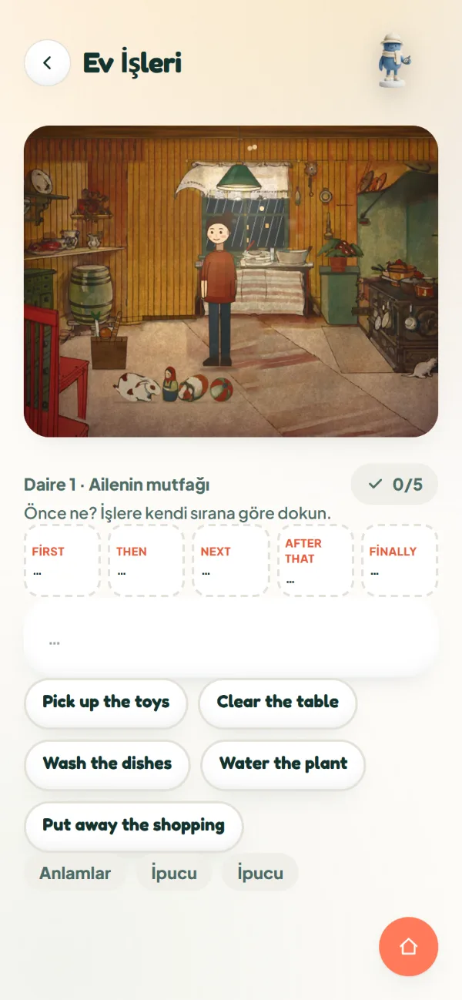
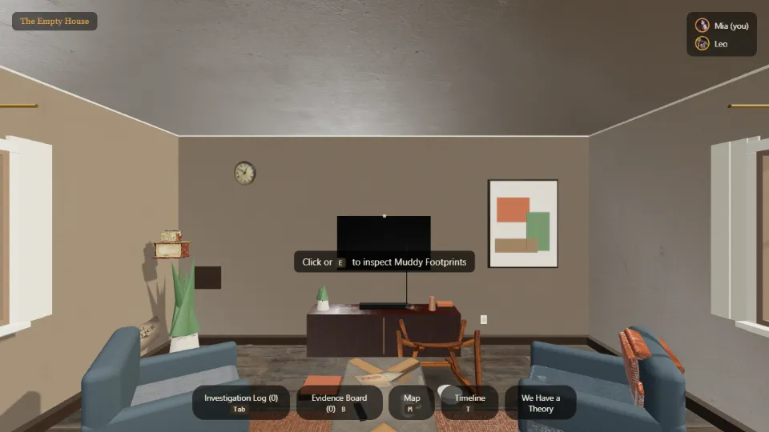
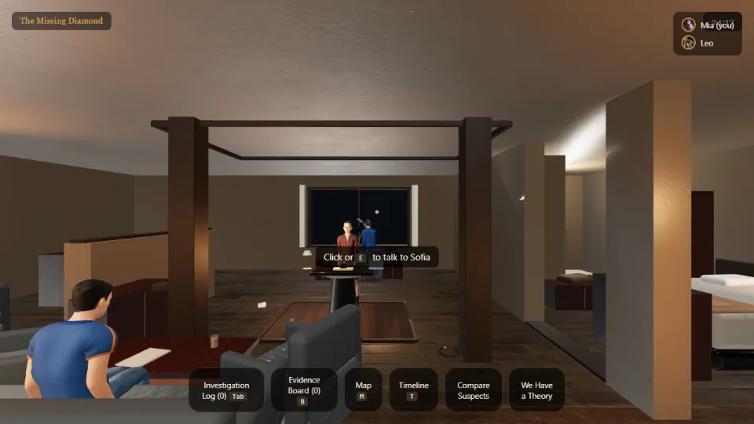
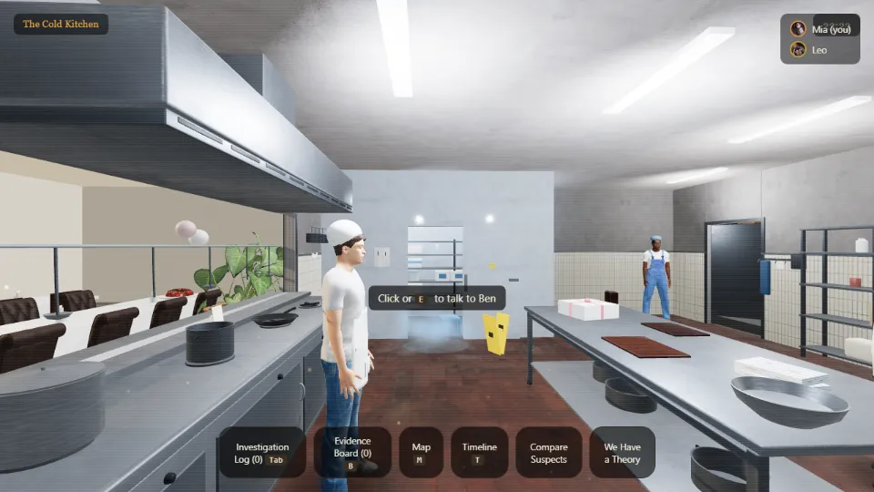
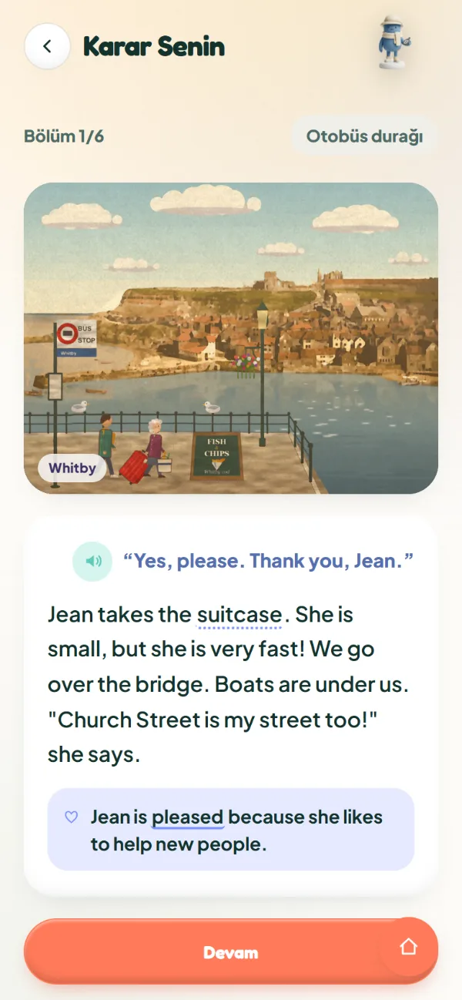
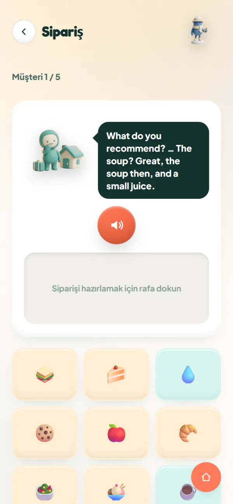
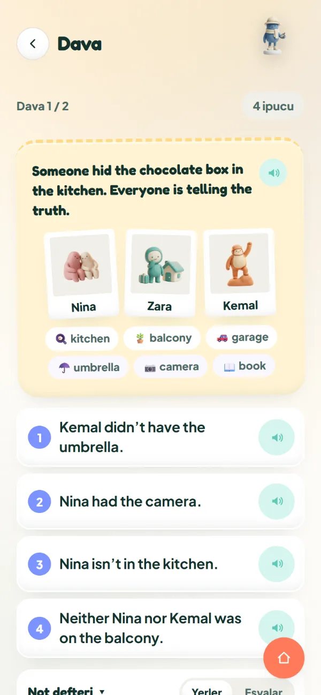
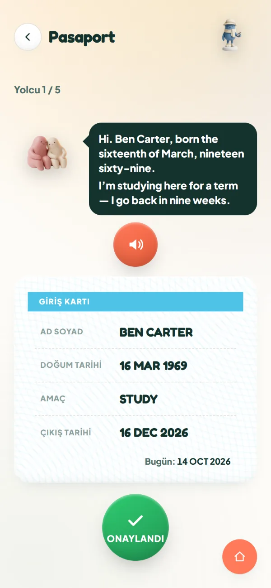
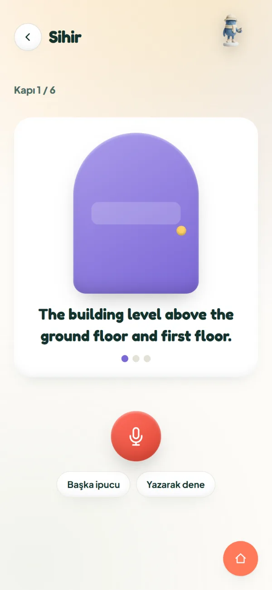
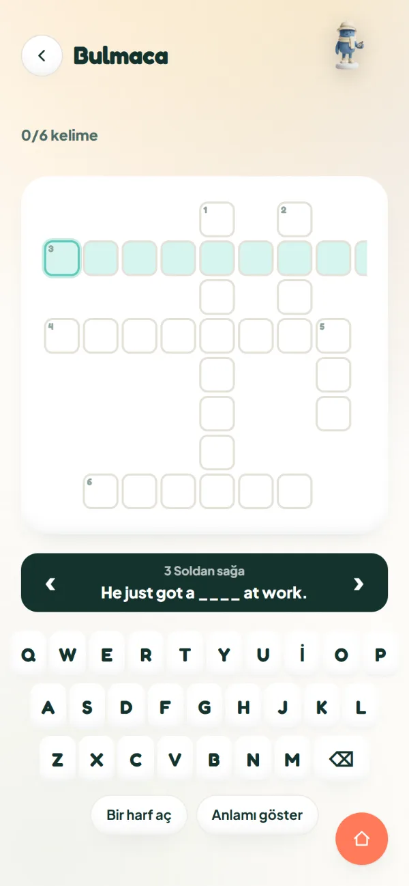

Yeni
Ev İşleri
Boyalı bir mutfağa gir. Cümleleri takip et, odayı sırayla topla.
Yeni odalar boyandıkça açılıyor.

FE School Stüdyo
İlk oyunumuz 100 Kapı. Sırada kısa film.

100 Kapı
2–6 kişi, tarayıcıda, birlikte. Tanığı sorgula, ipucunu anlat, teorini savun. İngilizce, vakayı çözmenin aracı.



Oyunlar
Her biri yol haritanın bir durağı ve bir beceriyi çalıştırır.
Boyalı bir mutfağa gir. Cümleleri takip et, odayı sırayla topla.
Yeni odalar boyandıkça açılıyor.

Whitby'de bir yaz, her seferinde bir seçim. Ne diyeceğini sen seçersin, hikaye ona göre ilerler.
Şimdilik A1 ve A2 yol haritalarında.


Müşteriyi dinle, tepsiyi hazırla.

İpuçlarını oku, kimin yaptığını bul.

Yolcuyu dinle, karttaki hatayı düzelt.

Kelimeyi sesli söyle, kapıyı aç.

Öğrendiğin kelimeleri bulmacaya yaz.
Her oda, adım adım test edilip onaylanan bir üretim sürecinden geçer. Sonra oynanır.
Konsept aşamasında
İlk konsept: pazarlık sahnesi, yaklaşık 3 dakika, gerçek oyuncular, A2–B1. Henüz çekim yok, tarih belli değil.